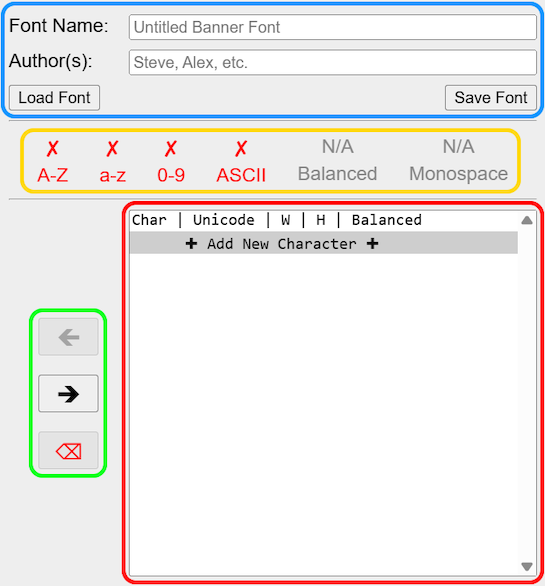

Welcome to MAST!
Minecraft Sign Editor
This tool is meant to help you make ASCII art for Minecraft signs, unlike other tools it is designed to perfectly match in-game signs with pixel-perfect accuracy.
Why is this tool useful?ASCII art is typically made with monospace fonts (= all characters take up the same width), which makes it both considerably easier to create and to be reused in any other monospace font without looking completely messed up. Unlucky for us, Mojangles (= the minecraft font), is not monospace, which means we have to keep in mind the width of each character when making ASCII art, this is the primary use for this tool.
Overview

- To get started, simply start typing into the multi-line text input, which is located above the sign display (or canvas).
- The buttons next to the canvas let you copy the text line-by-line so you can easily paste it to an in-game sign.
- Next to it you find the line width counter, which displays the number of pixels the line currently takes up. It also warns you when a line is over the 90 pixel limit. A dash (-) indicates an unused line, which is not the same as an empty one.
- There are numerous additional controls in the dashboards at the top, you can learn more about them below.
Display Options

To preview how exactly your design will look in-game disable "Show Overlay", enable "Center Text" and "Sign Background", finally choose the appropriate dye color (if applicable).
Show Overlay
On by default, the overlay helps you easily determine how much space each character uses, which is very helpful for ASCII art. When enabled, a color legend will be shown below the sign display:

Center Text
Disabled by default for easier editing, enable it to match the in-game behavior. Note how a fully filled line (90/90 pixels) looks the same as if it wasn't centered, this technique lets you more easily control the position of each character in that line.
Sign Background
On by default, toggles the rendering of the oak sign texture. When disabled, the background is transparent, most browsers let you right-click the sign display (canvas) and copy or save the image as a transparent PNG.
Utilities
Cut To Margins
Press this to quickly cut the text to the margins of a sign, i.e. 90 pixels wide and 4 lines long at the most.
Balance Used Lines
Press this to try and balance the text (= make all lines the same width as the longest) using the selected strategy.
space only
This strategy is limited to the space character, which means it can only increase lines by an increment of 4 pixels, as such it cannot always achieve fully balanced lines, it gets you close and then you can fix it the way you want from there.
space & dots (before / after)
This more advanced strategy can almost always achieve perfect balance, with the main downside being possibly adding visible characters. It uses the dot (.) and backtick (`) characters in addition to space, which enable 2 and 3 pixel wide increments as well. The two variants change whether the visible characters (dots) are put before or after the space.
In some circumstances it might increase the width of the longest line as well and balance to the new length, such as when there is a single pixel difference between the longest and second longest line. This is because there is no way to add a single pixel width to a line, as even the 1 wide characters add one more pixel for the gap after them.Banner Font Maker
This tool works alongside the Sign Editor, and lets you create custom fonts intended for the Banner Text Editor (WIP).
Overview
- The controls at the top let you name your font and list the authors, while the buttons allow you to save to- or restore your work from a file.
- Next, the font metrics panel measures some aspects of your banner font, such as how much of different character ranges are supported, or whether or not the font is balanced and/or monospace. While these metrics are mostly for the sake of completeness and not necessary for a good font, it is generally recommended to make your fonts balanced.
- The character list provides an overview of all characters in your font, including their size and a column for quickly spotting unbalanced designs.
- Finally, the transfer buttons are your way to move designs back and forth between the Sign Editor and the character list; add, remove or overwrite them.
Controls
Left Arrow Button (🡸)
Moves the current design for the currently selected character in the character list into the Sign Editor, allowing you to edit or review existing designs.
Right Arrow Button (🡺)
When you want to save a character design in the Sign Editor, this button lets you either:
- Add a new character to the font, for this simply have the corresponding option selected at the bottom of the character list. You will be prompted to enter the desired character.
- Overwrite the design for an existing character, simply select the character to write the new design to from the character list.
Discard Button (⌫)
This will remove the selected character from the font. Be careful, the design will be lost!
File Format
The banner font format (.mast) is a custom text-based file format intended to store custom ascii-art designs for different characters and all related metadata. The specifications are the following:
A banner font file always begins with a header section, each field separated by a newline (\n):
| Header Section | details |
|---|---|
| Format / Version Identifier | The string literal "MAST1", used to check for compatibility. |
| Font Name | This field contains the name for the font given by the user. |
| Font Author(s) | The author field filled in by the user, encouraged to be comma-separated for multiple authors. |
| Font Tags | A space-separated list of metadata tags about the font. |
| Size Info | "Max Lines" and "# of Characters" fields as decimal strings. See below. |
| Font Tag | meaning |
|---|---|
| UNBAL | This tag warns that the font is not balanced and might be difficult to work with. |
| MONO | Denotes that all characters of this font have the same size, ie. the font is monospace. |
| ASCII | The font maps all printable characters of the 7-bit ASCII table (from ! to ~). |
| FV_OLD | The font was designed with the old/classic font version (pre-1.13). |
| Size Info | details |
|---|---|
| Max Lines | The most number of lines used by the "tallest" character in this font. |
| <SPACE> | A single space for separating the two fields. |
| # of Characters | The number of characters that are mapped by this font in total. |
After the header, there is n (= "# of Characters") number of consecutive character mapping sections:
| Character Mapping | details |
|---|---|
| Char | The actual character this design is mapped to. |
| <SPACE> | A single separating space. |
| Width | The (max) width of the character design in pixels. |
In the event the height (number of lines) of the design differs from "Max Lines", the following segment is also inserted:
| <SPACE> | A single separating space. |
| <l> | The literal character "l" for indicating "lines". |
| Lines Override | The actual number of lines for this character (overriding "Max Lines"). |
In the event the character is unbalanced, the following segment may also be appended:
| <SPACE> | A single separating space. |
| <ub> | The literal string "ub", indicating "unbalanced". |
Finally, the actual character design is inserted:
| <NEWLINE> | A single separating newline (\n). |
| Design | The actual design, taking up "Max Lines" number of lines unless "Lines Override" specifies otherwise. |
Character Width Calculator
This tool can determine the character widths of any minecraft bitmap font.
This is a quite niche and technical tool, as it was mainly developed just to
generate the "char sizes" files needed for the Sign Editor and other tools.
You can also use it to browse through all supported characters or test your custom font textures, as it provides a preview for each character.
Basic Usage
Once you select the desired font mapping, you will see how many (bitmap) providers were found in that file. For each provider, you will see a dropdown with the name of the texture associated with that provider. When you open a dropdown, all characters mapped by that provider will get processed, which might take a few seconds. You will see the results appear in a table within the dropdown, where you can see the texture and width of each character in that provider.
Font Mappings
The tool uses the same format as the game itself, where any number of providers can be defined in the same JSON file. However, only bitmap providers are supported by this tool, all other providers are ignored. As only a single file is supported, reference providers cannot be implemented; you must manually inline them before use.
You can upload a custom JSON file, or use some common ones from the server:
- Default: These are the font mappings used by the rest of the tools by default, it is an inlined version of the current (modern) in-game font. default.json
- Classic: This bitmap provider is hand-made for the old (pre-1.13) ascii.png texture. old.json
Space Width
While the tool ignores space providers, you can still set a custom width for the space character through these controls.
Atlas Textures
Each bitmap provider has a file field pointing to its texture atlas. The "minecraft:font/" part of this field is automatically stripped by the tool to make the hosted mappings work with their stored textures.
You can replace the character atlas of any provider with your own texture; simply upload an image then enable the "Replace" checkbox. Finally, open the dropdown to process the provider, or close and reopen it if it was already processed. (The atlas image that was actually used will appear above the results table.)
Output File
As you open the different providers, the results are also accumulated in a list that can be downloaded as a text file. Next to the "Download Results" button you can see how many characters are currently in this output list. You can reset the list by refreshing the page.
The output file is a text file containing tab-seperated values (TSV), each row containing the following columns:
- The character itself.
- The determined width of the character (in pixels).
- The (maximum) height of the character texture.
- The ascent of the character.
Ready-to-use files
The pre-processed character sizes for the different font versions are available here:
- Default (modern) font: default.txt (ascii.png only: ascii.txt)
- Classic (pre-1.13) font: old.txt